The real chorus app driven through a PTY with the real CLIs. Each screenshot is the terminal as you would see it at that step.
all 27 checks passed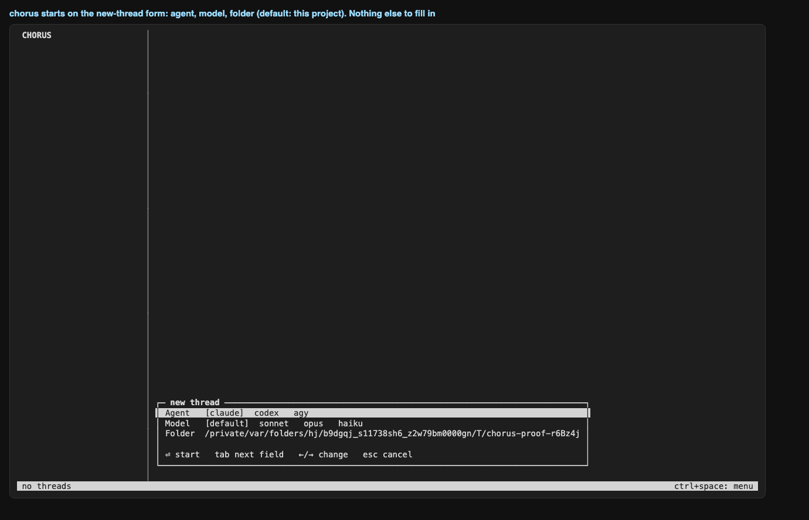
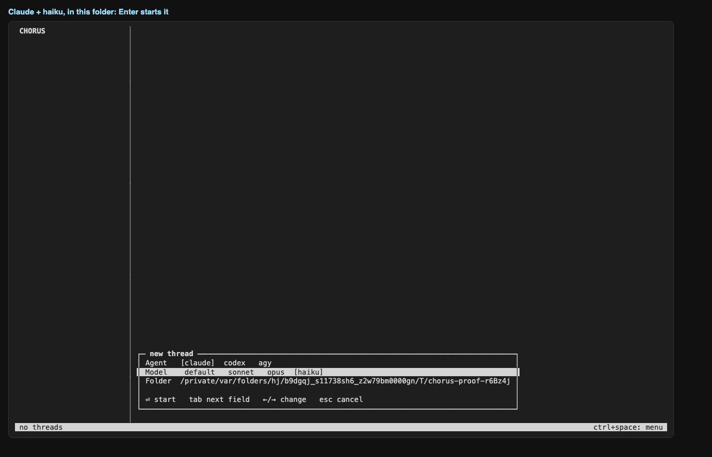
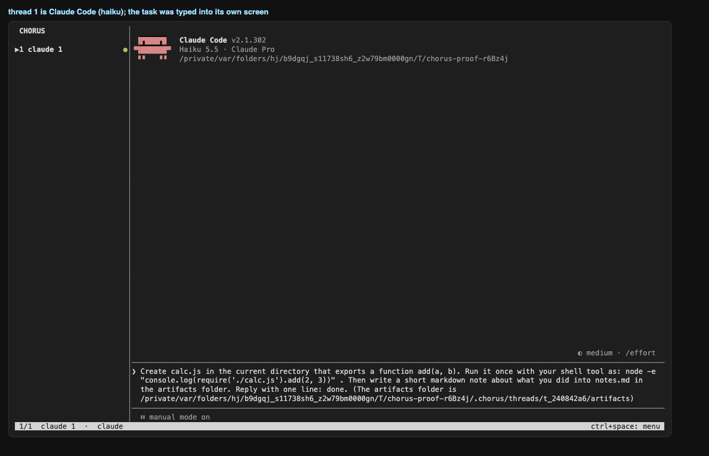
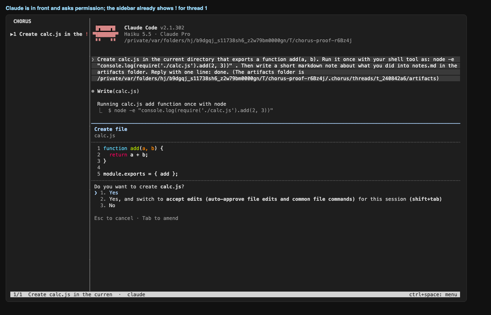
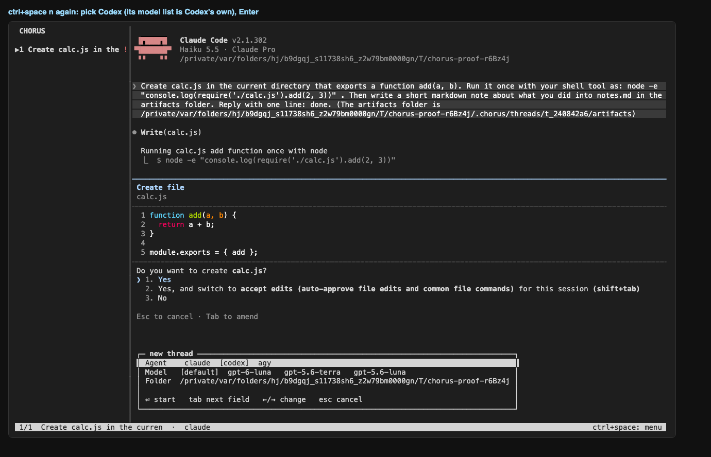
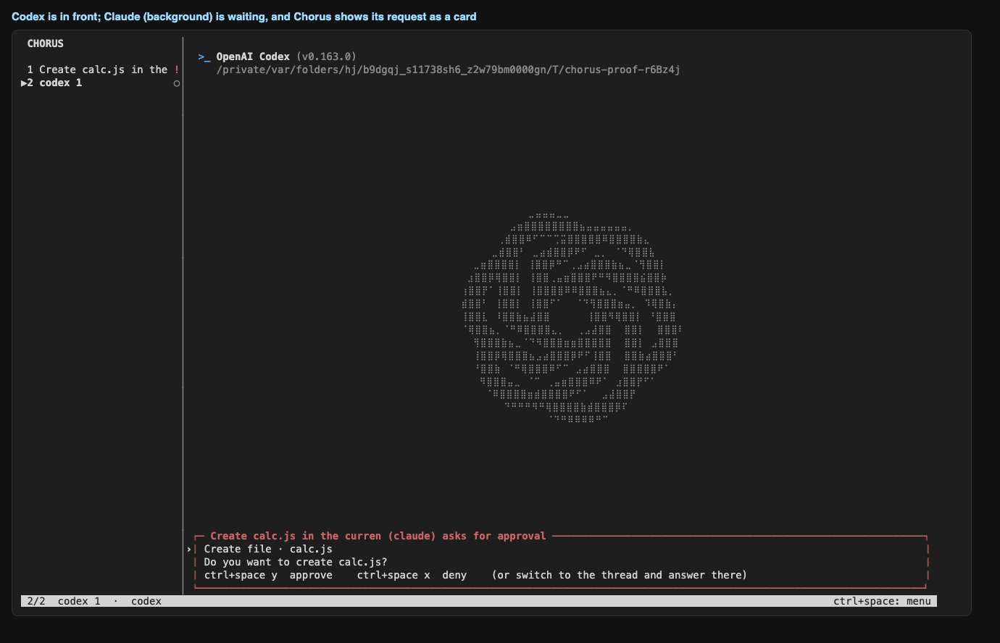
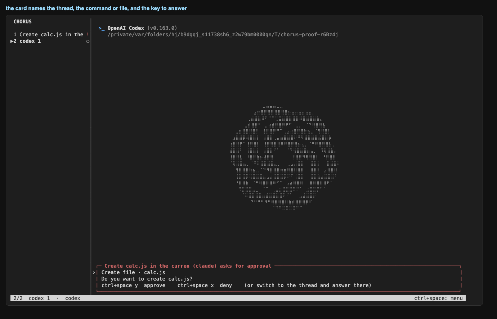
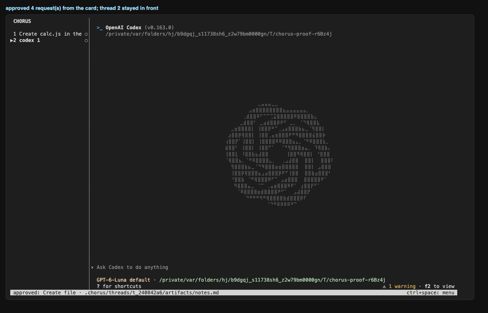
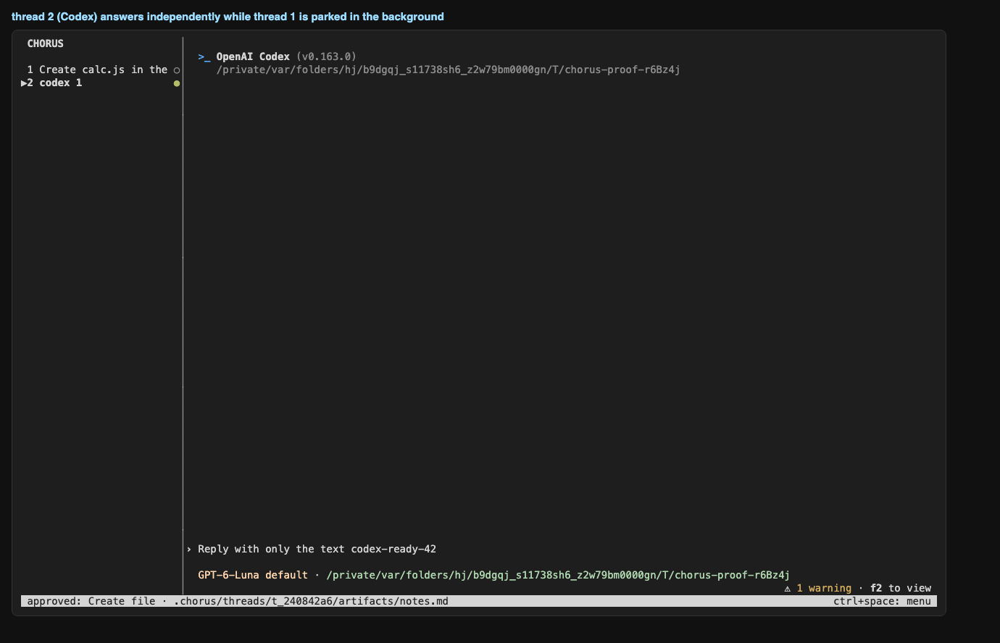
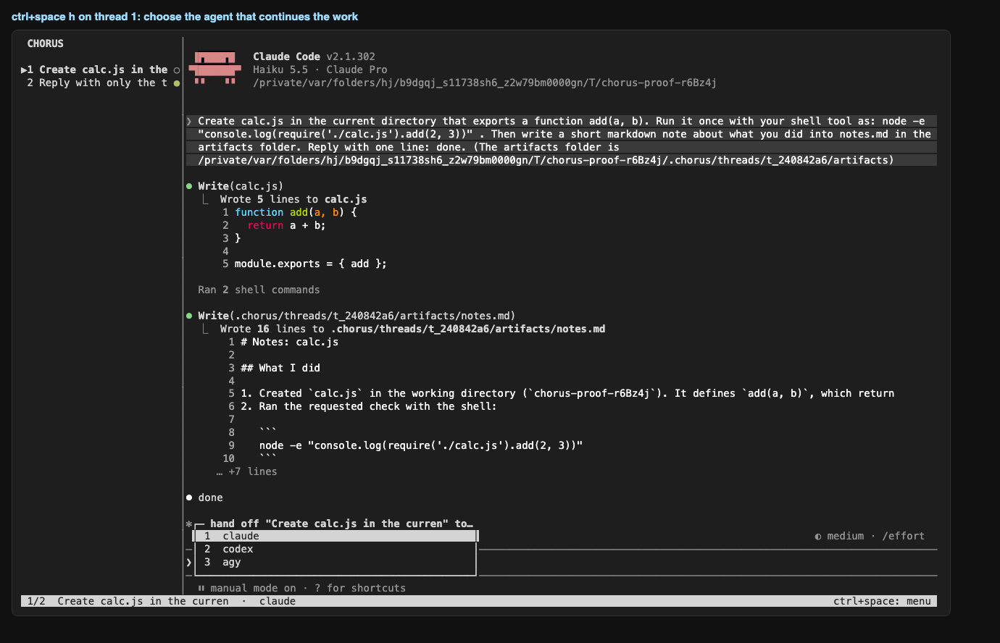
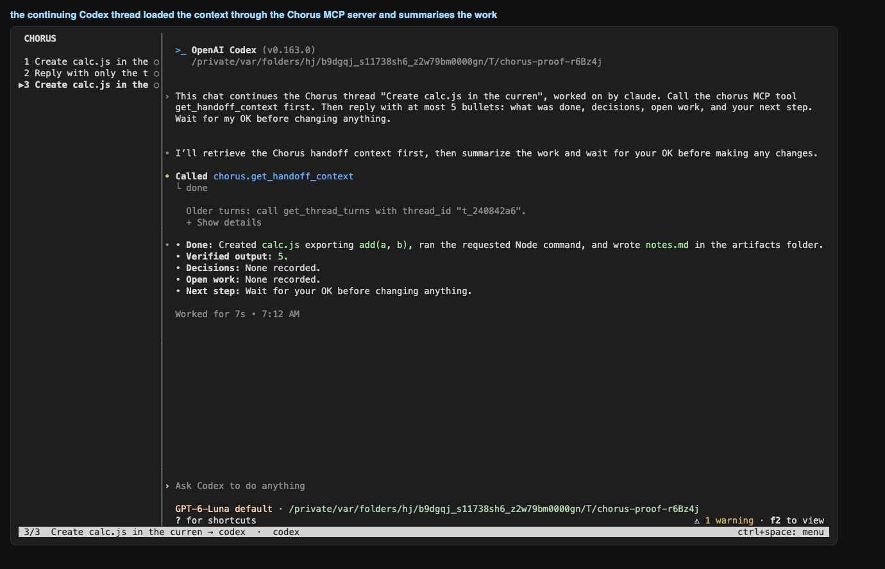
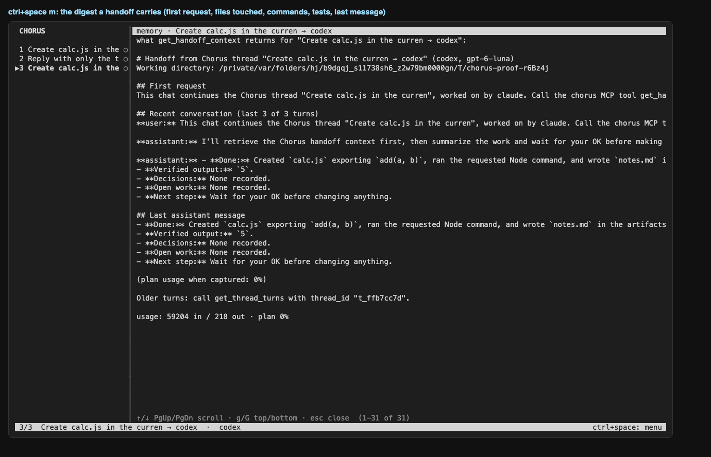
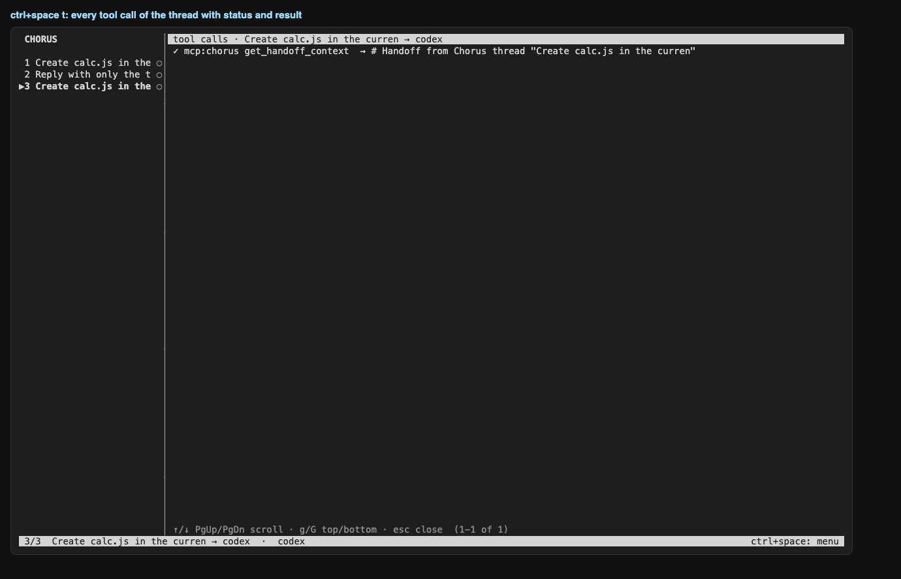
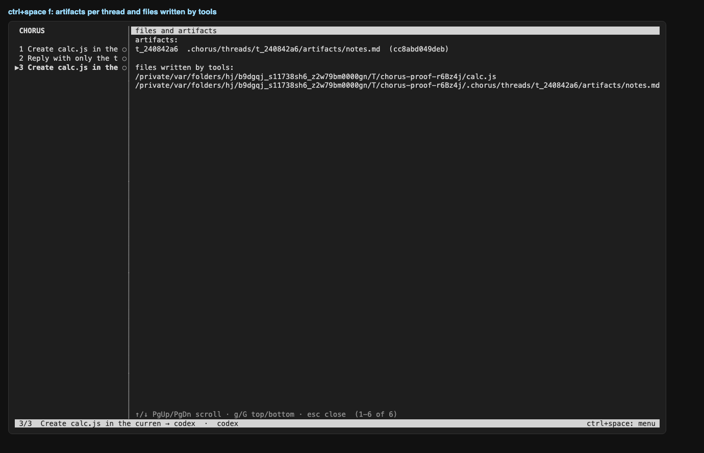
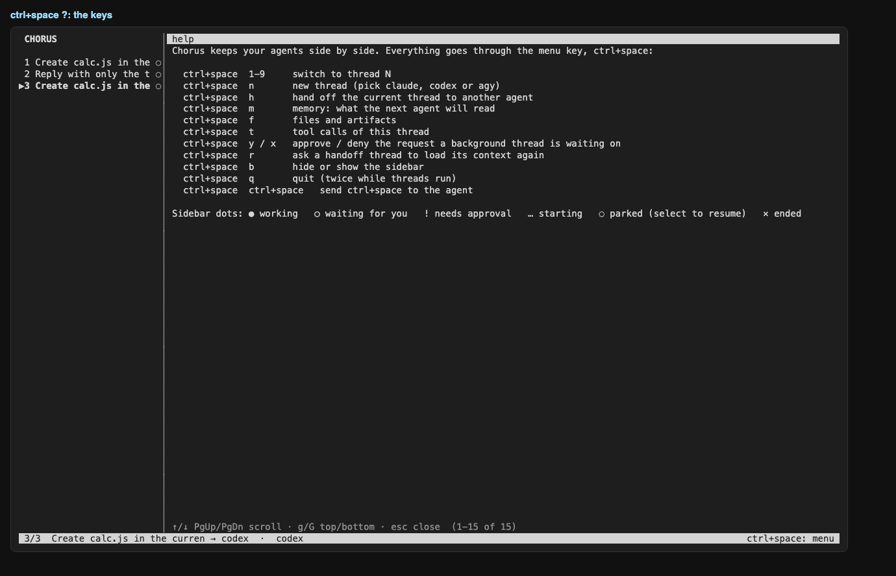
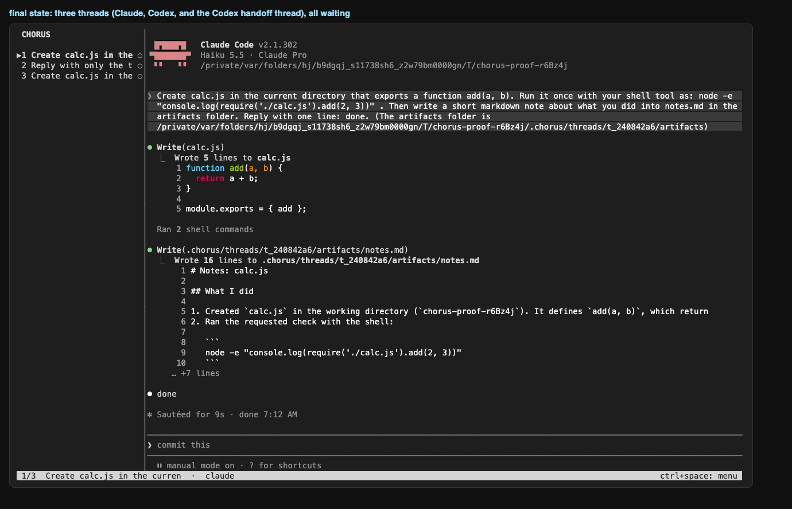
| ✅ | chorus opens on the new-thread form |
| ✅ | the form offers agent, model and the project folder |
| ✅ | model list is Claude's: haiku selected |
| ✅ | Claude opens inside the app |
| ✅ | the sidebar names the thread after the first message |
| ✅ | status line shows the menu key |
| ✅ | the agent's own permission prompt is detected (sidebar shows !) |
| ✅ | the new-thread form opens over the work in progress |
| ✅ | Codex opens in thread 2 |
| ✅ | thread 2 is in front and Claude (thread 1) is still pending |
| ✅ | an approval card for the background thread appears over Codex |
| ✅ | at least one request was approved from a card |
| ✅ | Claude created calc.js |
| ✅ | Claude thread finished: waiting dot, store state |
| ✅ | live tailing recorded the turns, the node call and the usage |
| ✅ | the artifact notes.md was registered |
| ✅ | Codex answers in its own thread |
| ✅ | handoff dialog names the thread |
| ✅ | the handoff thread appears as thread 3 |
| ✅ | the new thread is a child of the Claude thread in the store |
| ✅ | Codex called get_handoff_context (Chorus saw the MCP call) |
| ✅ | its summary names calc.js |
| ✅ | the handoff thread settles as waiting |
| ✅ | memory view shows what the next agent reads |
| ✅ | tool call view lists the commands |
| ✅ | files view lists the artifact |
| ✅ | app quits and restores the terminal |
$ chorus threads id agent state parent title t_ffb7cc7d codex waiting t_240842a6 Create calc.js in the curren → codex t_e4fc8837 codex waiting - Reply with only the text cod t_240842a6 claude waiting - Create calc.js in the curren
$ chorus activity thread agent turns tools mcp tokens in/out cost limit t_ffb7cc7d codex 3 1 1 59204/218 - 0% t_e4fc8837 codex 2 0 0 19294/9 - 0% t_240842a6 claude 2 4 0 38410/1039 - -
$ chorus artifacts t_240842a6 cc8abd049deb /private$TMPDIR/chorus-proof-r6Bz4j/.chorus/threads/t_240842a6/artifacts/notes.md
$ chorus trace <claude thread>
thread t_240842a6 (claude 2.1.302)
raw terminal capture: $PROJECT/.chorus/threads/t_240842a6/raw/pty.log (33797 bytes)
transcript: ~/.claude/projects/-private-var-folders-hj-b9dgqj-s11738sh6-z2w79bm0000gn-T-chorus-proof-r6Bz4j/0d99f123-6199-4313-af56-da054dbea930.jsonl
transcript lines: 59 → parsed turns: 2, tool calls: 4, status: waiting
last raw lines (cut) → what we made of the session:
raw {"parentUuid":"a0e700af-95f2-4b4b-9478-926198818a95","isSidechain":false,"message":{"model":"claude-haiku-5-5","id":"msg_011Cg8jZp1PcsbfWNFP4aKpL","type":"messa
raw {"parentUuid":"47997ad1-3e3f-408f-b427-246deb8e42a1","isSidechain":false,"type":"system","subtype":"turn_duration","durationMs":9781,"messageCount":30,"timestam
raw {"type":"cost-state","sessionId":"0d99f123-6199-4313-af56-da054dbea930","totalCostUSD":0.010984840000000001,"totalAPIDuration":11149,"totalAPIDurationWithoutRet
raw {"type":"last-prompt","lastPrompt":"Create calc.js in the current directory that exports a function add(a, b). Run it once with your shell tool as: node -e \"co
raw {"type":"cost-state","sessionId":"0d99f123-6199-4313-af56-da054dbea930","totalCostUSD":0.010984840000000001,"totalAPIDuration":11149,"totalAPIDurationWithoutRet
tool ok Write $PROJECT/cal
tool ok Bash node -e "console.log(require('./calc.js').add(2, 3))"
tool ok Bash mkdir -p /private/var/folders/hj/b9dgqj_s11738sh6_z2w79bm0000gn/T/chorus-proof-r
tool ok Write $PROJECT/.ch
turn user: Create calc.js in the current directory that exports a function add(a, b). Run it once with your she
turn assistant: done
MCP calls from this thread: none
$ chorus doctor
chorus doctor
node v26.10.0
project: $PROJECT
store: $PROJECT/.chorus/chorus.db (exists)
claude 2.1.302 verified 2.1.301 logged in
⚠ claude 2.1.302 is newer than the last verified 2.1.301; re-run tools/probe and check docs/integrations/claude.md
data: ~/.claude
codex 0.163.0 verified 0.163.0 logged in
data: ~/.codex
agy 1.4.1 verified 1.4.0 has a settings file (no status command; start agy once to sign in)
⚠ agy 1.4.1 is newer than the last verified 1.4.0; re-run tools/probe and check docs/integrations/agy.md
data: ~/.gemini/antigravity-cli